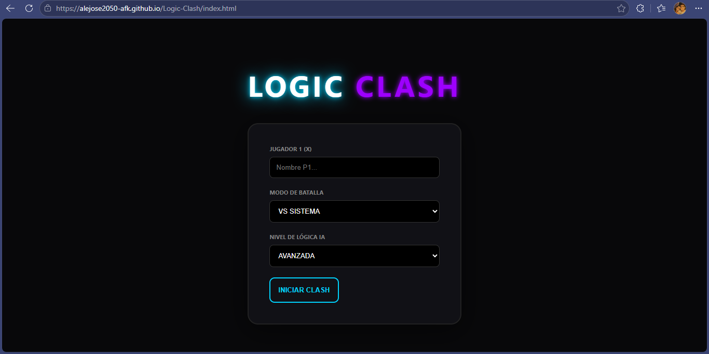
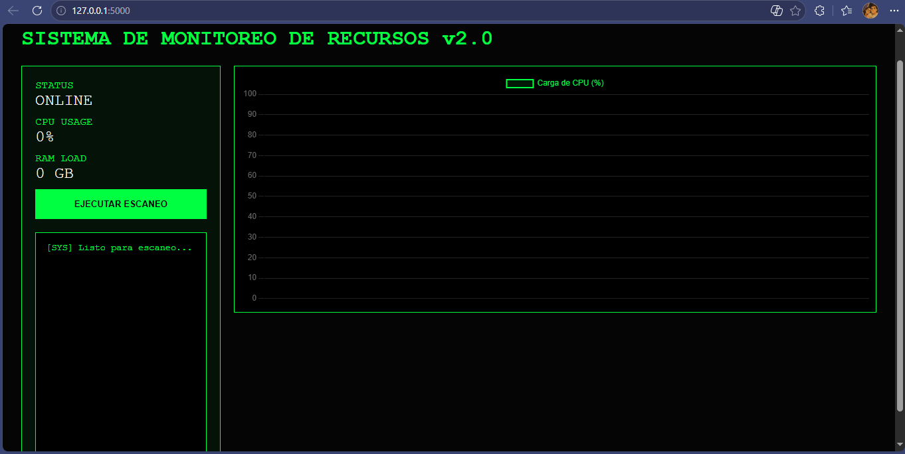

Ingeniería +
Transformando ideas en soluciones digitales funcionales y escalables.
Sobre mí
"Estudiante de Ingeniería Informática de 7mo semestre, apasionado por construir soluciones lógicas que integran el mundo del software con la solidez del hardware. Mi formación me ha permitido pasar de la teoría a la práctica, creando desde sistemas de bases de datos y simulaciones de servidores hasta el (mantenimiento y optimización de infraestructura física de computo). Creo firmemente en la IA como un multiplicador de capacidades; la integro en mi flujo de trabajo para profundizar en conceptos complejos y refinar mi código. Mi enfoque actual combina el dominio de Python con mi capacidad técnica en soporte de hardware, permitiéndome transformar la lógica en productos tecnológicos de alto valor, funcionales desde su núcleo físico hasta su despliegue digital."
🤖 AI-Powered Workflow
Mi flujo de trabajo integra modelos generativos para elevar la calidad técnica:
- Eficiencia: Generación de estructuras de código y lógica repetitiva.
- Optimización: Depuración asistida y refactorización de algoritmos.
- Análisis: Comprensión rápida de documentación y nuevas librerías.
🚀 Proyectos & Servicios

⚔️ Logic Clash
Juego interactivo con lógica dinámica optimizada con IA para la gestión de estados.
Demo Live
🖥️ Server Monitor
Simulación backend de monitorización de sistemas y servidores utilizando Python.
Ver Código🛠️ Soporte & Hardware
Mantenimiento preventivo y correctivo de equipos, diagnóstico de hardware y optimización de sistemas.
Servicio Activo